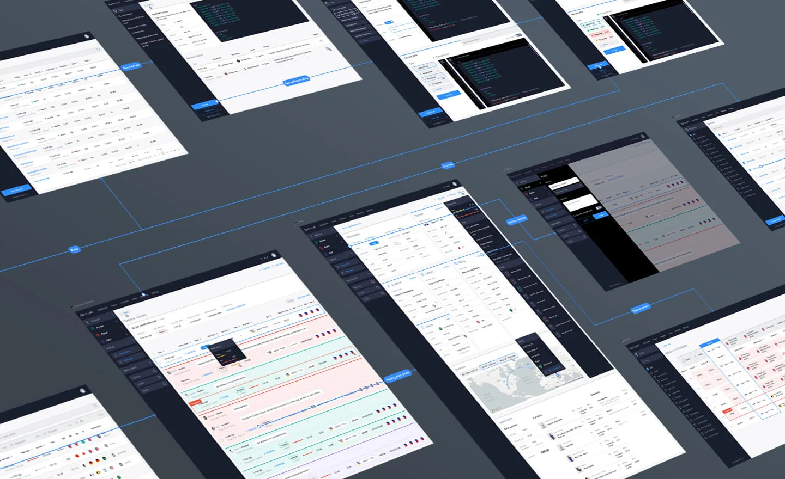
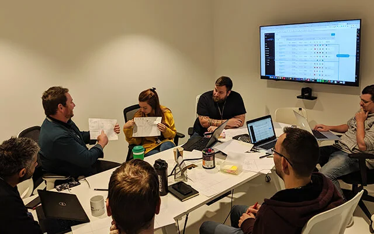
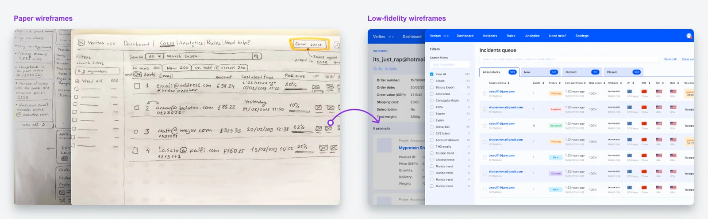
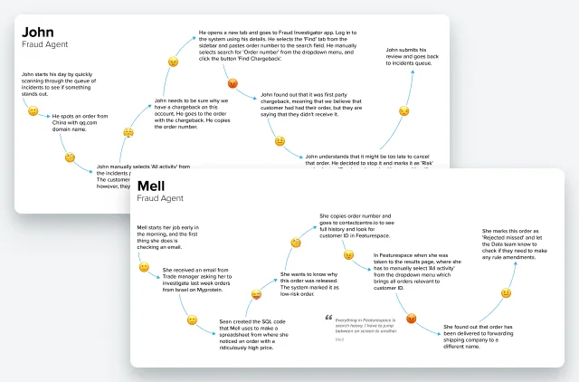
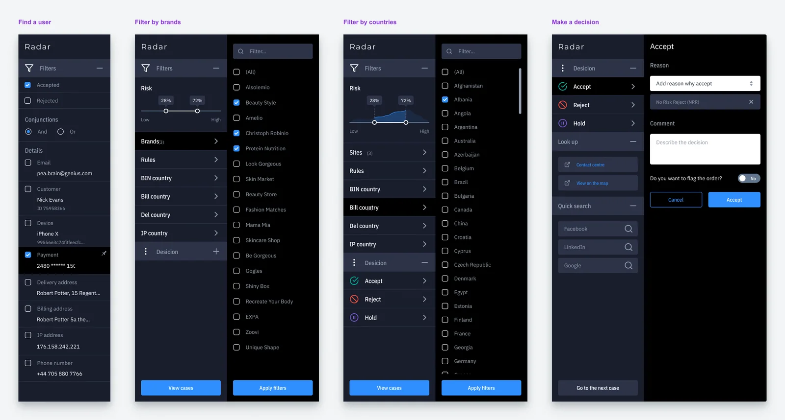
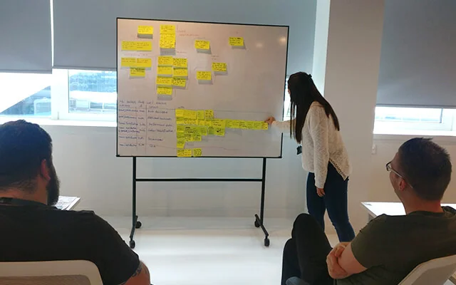
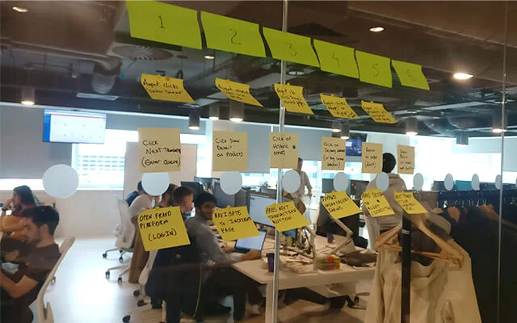

Fraud Detection
This case study highlights the process of designing the Fraud Detection Platform that, with the help of AI, detects and prevents fraudulent transactions. It learns from all transactions made through various e-commerce websites processing thousands of payments each day.
The tool assigns risk scores to every payment and automatically blocks high-risk payments. It is also smart enough to identify cases that require agents' attention and learns from their decisions, adapting to new patterns.
The Innovative anti-fraud technology I designed won industry recognition at Retail Risk’s Fraud Awards in 2020.

In compliance with the non-disclosure agreement, I’ve omitted all confidential information in this case study.
The challenge
The Fraud Prevention team used a third-party tool to monitor and assess suspected fraudulent transactions. The team used to process around 50k orders per day. It was an unmanageable challenge to keep track of and investigate all payments manually.
The previous third-party tool cost a significant amount of money and wasn't tailored for the specifics of retail business. So THG invested into a new Fraud and Risk Management solution that can be integrated with their own Checkout and Payments systems.

Ideation workshops involving software engineers and stakeholders.
My role
While working at THG as a UX Designer, I designed and evaluated the new cloud-native Fraud Detection Platform uniquely built for retailers. I worked closely with a product manager, data scientists, and software engineers.
My work resulted in significant savings for the company. The new Fraud Detection Platform saves the company around £18,000 per month. It also gave the company complete control over fraud and risk management. In addition, over a three-year, it is expected to generate £500k. The new Fraud Detection Platform was marketed alongside Checkout and Payments solutions. The anti-fraud tool is suited to retail businesses of all sizes and is already being used by a number of THG's partners and clients.

Through iterations of wireframes, I've managed to collect agents' feedback and solve minor problems.
The research
Critical metrics:
- Reduction of the chargeback rate. The number of chargebacks received from a bank's API.
- Reduction in the fraud referral rate. The amount of events processed automatically and when a system refers to an agent, so they review a potentially fraudulent transaction.
- Reduction of the fraud check delay. The time it takes to make a decision on an event in the UI.
- Reduction in the agent false positive rate. The number of wrong decisions made by an agent either accepting or rejecting the payment.
I conducted a field study by observing and interviewing agents in their environment while they were investigating fraudulent transactions. In addition I've interviewed data scientists to understand what steps they need to complete to achieve operational goals of rule creation. That helped me understand end-users pitfalls when interacting with a fraud detection tool.
Interviewing managers helped me understand competitors' platforms' problems and limitations. Because managers had good knowledge and experience in using competitors' platforms, they helped me evaluate similar tools that the company used throughout the years.
Analysing quantitative data helped me understand common patterns and activities agents undertake while interacting with the system.

Journey maps helped me to identify paint points that agents experience.

Through the side panel an agent can navigate, search, filter, reject, accept or put on hold incidents.
Workshops
After interviewing agents, I created draft journey maps. I invited some agents, engineers and managers, and looking at the map together, we identified opportunities to improve the user experience.

Identifying agents' needs and success metrics.
I used data collected from the field study and the analytics tool to create a list of top tasks. After that, I asked the agents and managers to vote for the importance of the task. That helped me to identify five tasks which were:
- View the order, person and payment details to investigate the case.
- View a list of all incidents with a risk score and the name of an agent who picked the case.
- Analyse fraudulent trends to create rules.
- Liaise with other agents to solve complex cases.
- Pause and restore cases that require more time to close.
I facilitated a series of ideation workshops engaging the whole team. That helped me to create low-fidelity prototypes for two primary user groups, data scientists and agents.
After testing low-fidelity prototypes, I refined designs. When I was happy with the draft designs, I designed higher-fidelity digital prototypes, which I tested again.

With the help of agents, I created a storyboard which showed the flow sequences for user testing. This helped me to reshuffle some steps before building the prototype.

A user can see orders with a chargeback in the list at a glance. An agent can view purchase details and the history of previous transactions. The data scientists can write a rule and backtest it against similar transactions.
Results
The Fraud Detection Platform reduces the time labour intensive process of investigating cases and monitoring transactions. Also, it allows managers to see the team's performance, quickly generate reports, and share them across the organisation.
Overall we've seen reductions across four of the five key metrics against the previous year (YOY):
- 20% reduction of the chargeback rate.
- 40% reduction in the fraud referral rate.
- 30% reduction in the fraud check delay due to improved UX.
- 50% reduction in the agent false positive rate.
The solution I've designed has won industry recognition at Retail Risk's Fraud Awards in 2020, a huge achievement for everybody involved in the project.

Thanks to the improved user experience of the new Fraud Detection platform, the average time required to investigate an incident by an agent reduced significantly. The performance of the new tool is almost double times better of the previous solution.